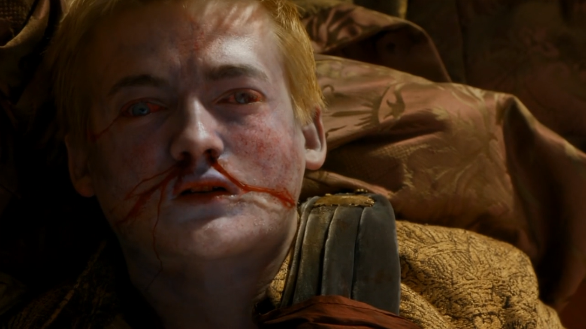
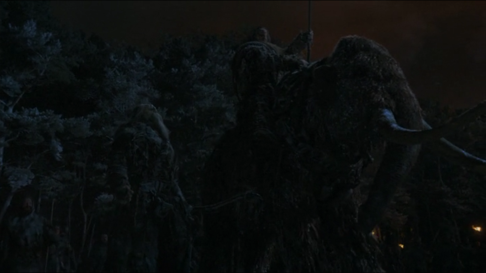

A new season welcomes a fresh face to King's Landing. Oberyn Martell (Pedro Pascal), dashing prince of Dorne, arrives at the capital for the marriage of Joffrey and Margaery (and also to take vengeance against the Lannisters, whom he holds responsible for the death of his sister).
But Joffrey's wedding doesn't go quite as planned. He is poisoned and topples over before he has had a chance to toast his new bride. Also exiting King's Landing, albeit by less bloody means, is Sansa, smuggled to freedom by slippery Lord Petyr "Littlefinger" Baelish (Aidan Turner) and Margaery's wily grandmother Lady Olenna Tyrell (Diana Rigg). We will later discover they conspired to kill Joffrey, so sparing Margaery being hitched to a brute.
Joffrey
At the Eyrie Sansa falls foul of mad Aunt Lysa who attempts to push her niece through a Moon Door. She is rescued by Littlefinger, with Lord Baelish instead sending Lady Arryn, with whom he has entered an arranged marriage, to her gravity-assisted demise.
Up north Jon Snow warns the Night's Watch that Mance Rayder intends to attack. An epic battle ensues and Jon and Ygritte's relationship hits an awkward patch as she tries to cut him down with an arrow. With the Wildlings temporarily repulsed, Jon sneaks off to kill Rayder – only for Stannis Baratheon and his forces to ride to the rescue of the Night's Watch.

Back at King's Landing, the innocent Tyrion is accused of assassinating Joffrey. The case is to be decided with trial by combat. However, his champion Oberyn is cut down by the "Mountain" Gregor Clegane (Sandor's hulking brother). Later, Jaime releases his brother who sneaks back to his chambers to find his lover Shae has been canoodling with Tyrion’s father Tywin. Tyrion shoots his dad on the latrine and, aided by Master of Whispers Varys, flees Westeros. Also quitting the Western continent is Arya. She witnesses an apparent fight to the death between Sandor and Brienne (who, having failed Catelyn, has sworn to protect any Stark crossing her path). Exhibiting uncharacteristic cruelty, Arya leaves Sandor to his fate and crosses the Narrow Sea to study with Jaqan H'ghar's Faceless Men.